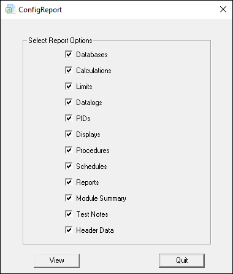
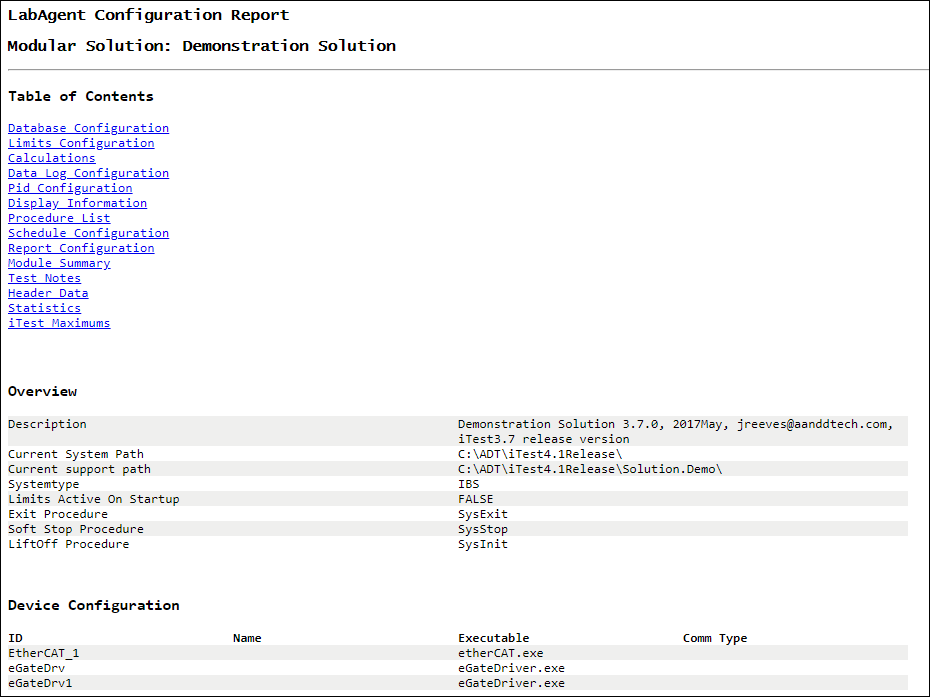
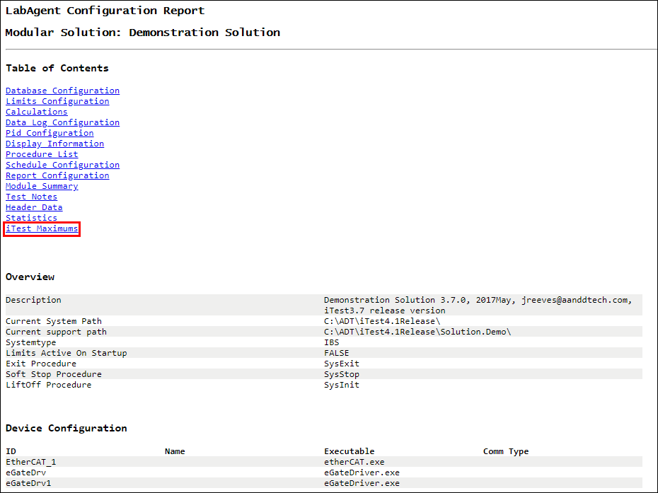
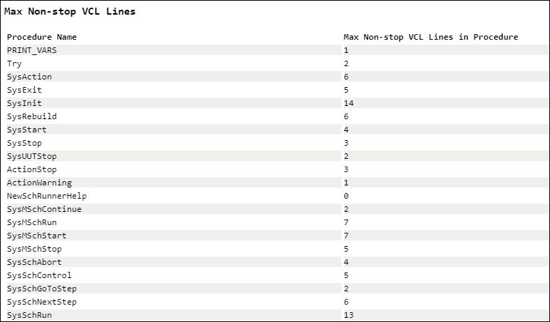

iTest User's Guide
iTest's Configuration Report allows you to build a report based on options that you select in the ConfigReport dialog. These selections will then be used to compile a web page with report data that can be viewed or printed.
In the ConfigReport dialog, select the options you want to include in your report, and then click the View button.
ConfigReport Dialog

Use the links in the table of contents to navigate to the corresponding sections.
 |
NOTE: | Header data is taken from the last modified data (DAT) file present in the current project folder. This may not be the last data file to be run. |
View Report

You can use the Configuration Report to view the current maximum settings for your version of iTest. Although there is no specific option associated with this in the ConfigReport dialog, iTest maximums are automatically added to the end of any generated report. Click the iTest Maximums link at the very end of the table of contents to navigate to that section. For more information, refer to the System Maximums documentation.
iTest Maximums Example

To run ConfigReport from the command line, use the following syntax:
ConfigReport.exe <filepath>\<filename>.html
|
NOTE: | The user interface will not open when running ConfigReport.exe from the command line; it will just generate the requested report file. |
The Configuration Report contains an additional command line option that checks all .tsc files to analyze them for consecutive lines of real-time code. This is code with a +0.0 in front of every statement with no pause in between. As of iTest 3.4, the limit on these lines is 50 in a row, so this option is useful for checking every procedure to see if there are any potential issues with this limitation. The report is generated from the command line using the following syntax:
ConfigReport ShowMaxNoPauseVCL
The following report section will be generated at the bottom of the report when using this command line option:
Show Max Non-Stop VCL Lines
